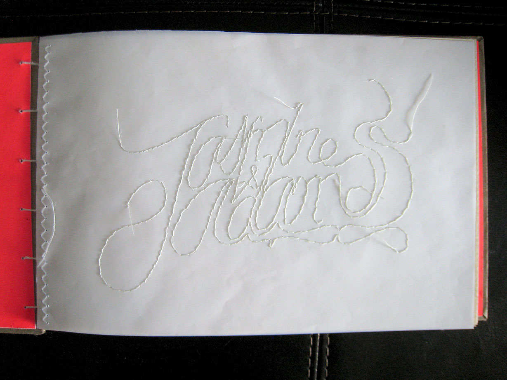

wedding guestbook
personal bookbinding project
This is a handmade wedding guestbook I made for my sister Jasmine and her husband Adam. I wanted to create something very personal, customized, and handmade.The cover type treatment is hand-lettered, and the same type is hand sewn on vellum paper for the inside cover. The book is bound by a coptic stitch, which I learned through online tutorials.
The inside cover features the hand-lettered type hand sewn on vellum.
